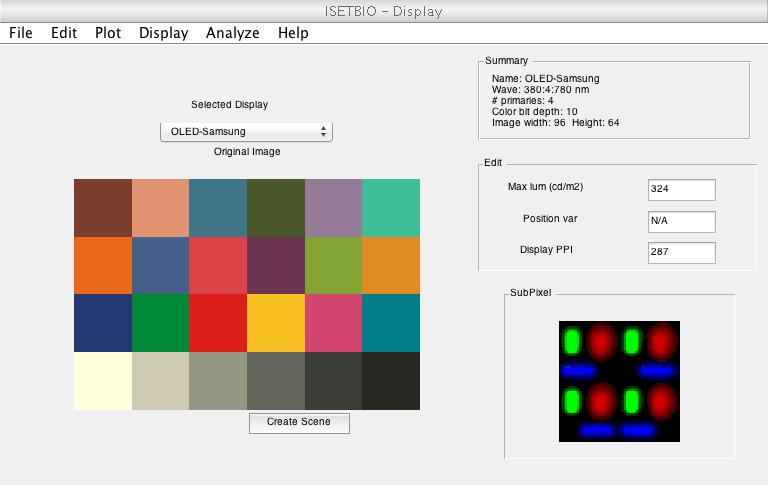
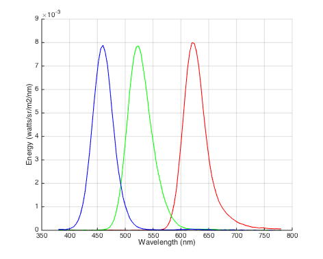
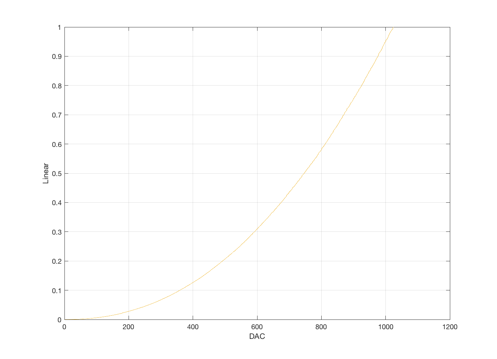
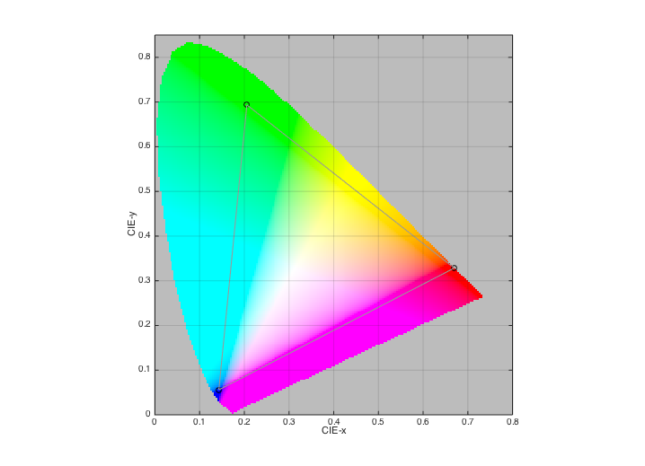
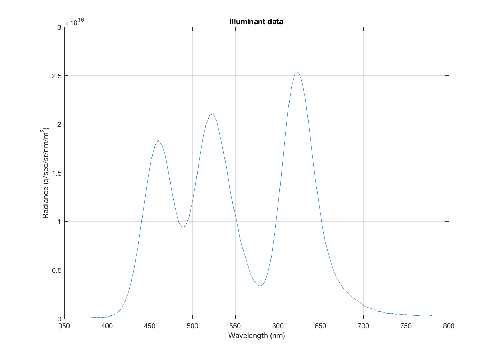
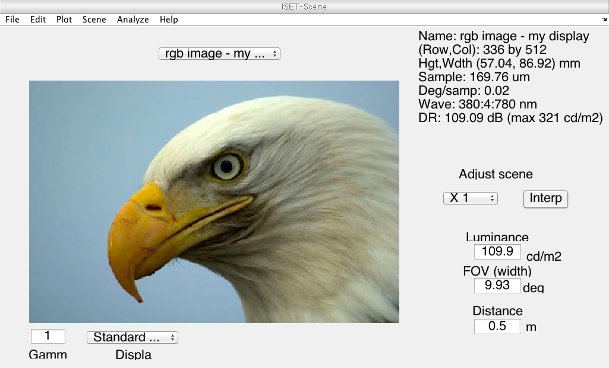

t_displayIntroduction
Introduction to ISETBIO objects and functions: display
(HJ) ISETBIO TEAM
Contents
Initialize ISET
s_initISET;
Create a display
create a default display
Other displays can also be created by specifying the calibration file
name
Example:
d = displayCreate('LCD-Apple');
d = displayCreate('OLED-Sony');
d = displayCreate('CRT-Dell');
Calibration files are stored in
ISETBIO_ROOT_PATH/isettools/data/displays/d = displayCreate('OLED-Samsung');
Show default image and GUI
show display structure in a GUI window
vcAddObject(d); displayWindow;
[vcReadImage] Assuming 8bit image and 10 bit LUT
Get and Set methods
get and set parameters for display
More parameters can be found in displayGet and displaySet
displayGet(d, 'name'); displayGet(d, 'gamma table'); displayGet(d, 'white xyz'); displayGet(d, 'primaries xyz'); displayGet(d, 'rgb2xyz'); d = displaySet(d, 'name', 'my display'); d = displaySet(d, 'dpi', 150); displayGet(d,'dpi')
ans = 150
Plot for display basics
plot for display primaries spd, gamma table, etc.
More plot options can be found in displayPlot
displayPlot(d, 'spd'); % spectral power distribution displayPlot(d, 'gamma'); % gamma table displayPlot(d, 'gamut');  
Create scene from image and display
create scene by specifying image on display
only static image is supported some sample image files are stored in ISETBIO_ROOT_PATH/isettools/data/images/rgb/
I = im2double(imread('eagle.jpg')); scene = sceneFromFile(I, 'rgb', [], d); % The display is included here vcAddObject(scene); sceneWindow; % Note that by default the spectral power distribution of the scene is % based on the primaries of the display. Also, notice that the illuminant % is equal to the white point of the display plotScene(scene,'illuminant photons') % You can change the illuminant this way % This method preserves the reflectance, but changes the illuminant and the % scene radiance. scene2 = sceneAdjustIlluminant(scene,'D65.mat'); vcAddObject(scene2); sceneWindow; % If you would like to change the illuminant only, you can use % sceneSet(scene,'illuminant',ill); That will change the reflectance. % We plan to add a sceneSet(scene,'illuminant preserve reflectance',ill);
ans =
wave: [101x1 double]
photons: [101x1 single]
comment: []
 